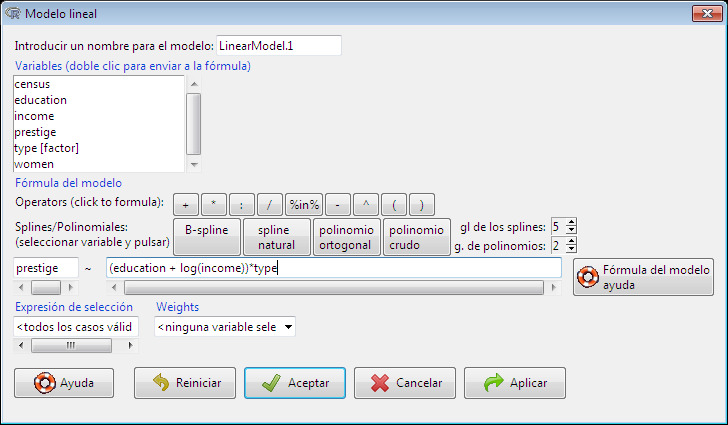

Several kinds of statistical models can be fit in the R Commander using menu items under Statistics -> Fit models: linear models (by both Linear regression and Linear model), generalized linear models, multinomial logit models, ordinal regression models such as the proportional-odds model [the latter two from Venables and Ripley’s nnet and MASS packages, respectively [1]], and linear and generalized linear models [using the lme4 package [2]]. Although the resulting dialog boxes differ in certain details (for example, the generalized linear model dialog makes provision for selecting a distributional family and corresponding link function), they share a common general structure, as illustrated in the Linear Model dialog in Figure 15.Se pueden ajustar varios tipos de modelos estadísticos en el R Commander mediante las opciones del menú Estadísticos -> Ajuste de modelos: modelos lineales (tanto por Regresión lineal como por Modelo lineal), modelos lineales generalizados, modelos logit multinomiales, modelos de regresión ordinal como el modelo de probabilidades proporcionales [estos dos últimos de los paquetes nnet y MASS de Venables y Ripley, respectivamente [1]], y modelos lineales y lineales generalizados mixtos [utilizando el paquete lme4 [2]]. Aunque los cuadros de diálogo resultantes difieren en ciertos detalles (por ejemplo, el cuadro de diálogo de modelos lineales generalizados contempla la selección de una familia de distribución y su correspondiente función de enlace), comparten una estructura general común, tal como se ilustra en el cuadro de diálogo Modelo lineal de la Figura 15.1An exception is the Linear Regression dialog in which the response variable and explanatory variables are simply selected by name from list boxes containing the numeric variables in the current data set.Una excepción es el cuadro de diálogo Regresión lineal, en el que la variable respuesta y las variables explicativas se seleccionan simplemente por su nombre en casillas de lista que contienen las variables numéricas del conjunto de datos actual. Before selecting Statistics -> Fit models -> Linear Model, I made Prestige the active data set by clicking on the active data set button and selecting Prestige from the resulting list. Recall that the Prestige data were read from the car package in Section Reading Data from a Package.Antes de seleccionar Estadísticos -> Ajuste de modelos -> Modelo lineal, convertí Prestige en el conjunto de datos activo haciendo clic en el botón de conjunto de datos activo y seleccionando Prestige en la lista resultante. Recuerde que los datos de Prestige se leyeron desde el paquete car en la Sección Lectura de datos desde un paquete.

Fig. 15: El cuadro de diálogo Modelo lineal, con Prestige del paquete car como el conjunto de datos activo.
- Double-clicking on a variable in the variable-list box copies it to the model formula — to the left-hand side of the formula, if it is empty, otherwise to the right-hand side (with a preceding + sign if the context requires it). Factors (categorical variables — here, type) are parenthetically labelled as such in the variable list.Hacer doble clic en una variable de la casilla de lista de variables la copia a la fórmula del modelo (al lado izquierdo de la fórmula si está vacío; de lo contrario, al lado derecho, con un signo + precedente si el contexto lo requiere). Los factores (variables cualitativas o categóricas, aquí type) están etiquetados como tales entre paréntesis en la lista de variables.2Some data frames contain logical variables (with values TRUE and FALSE) and character variables, with values that are text strings (such as "male" and "female"). If such variables are present, the R Commander will treat them as if they were factors. In most context, this will work properly. Character data read from plain-text files will automatically be converted to factors.Algunos marcos de datos contienen variables lógicas (con valores TRUE y FALSE) y variables de caracteres, con valores que son cadenas de texto (como "male" y "female"). Si tales variables están presentes, R Commander las tratará como si fueran factores. En la mayoría de los contextos, esto funcionará correctamente.
Los datos de caracteres leídos desde archivos de texto plano se convertirán automáticamente en factores. Entering a factor into the right-hand side of a statistical model formula generates dummy-variable regressors.Introducir un factor en el lado derecho de la fórmula de un modelo estadístico genera regresores de variables ficticias o indicadoras. - The top row of buttons in the toolbar above the formula can be used to enter operators and parentheses into the right-hand side of the formula.La fila superior de botones en la barra de herramientas situada sobre la fórmula se puede utilizar para introducir operadores y paréntesis en el lado derecho de la fórmula.
- The bottom row of buttons in the toolbar can be conveniently used to enter regression-spline and polynomial terms into the model formula, with the degrees of freedom for splines and the degree of polynomials controlled by the spin-boxes to the right of the buttons (defaulting to 5 df and degree 2, respectively).La fila inferior de botones en la barra de herramientas se puede utilizar cómodamente para introducir términos polinómicos y de splines de regresión en la fórmula del modelo, controlando los grados de libertad para los splines y el grado de los polinomios mediante las casillas con flechas (spin-boxes) situadas a la derecha de los botones (con valores por defecto de 5 grados de libertad y grado 2, respectivamente).
- You can also type directly into the formula fields, and indeed may have to do so, for example, to put a term such as log(income) into the formula, as I’ve done here. Some information on R model formulas may be obtained by pressing the Model formula help button in the linear-model dialog.También puede escribir directamente en los campos de la fórmula, y de hecho puede que tenga que hacerlo, por ejemplo, para introducir un término como log(income) en la fórmula, como he hecho aquí. Se puede obtener información sobre las fórmulas de los modelos de R pulsando el botón Ayuda para la fórmula del modelo en el cuadro de diálogo del modelo lineal.
- The name of the model, here LinearModel.1, is automatically generated, but you can substitute any valid R name.El nombre del modelo, aquí LinearModel.1, se genera automáticamente, pero puede sustituirlo por cualquier nombre válido de R.
- You can type an R expression into the box labelled Subset expression; if supplied, this is passed to the subset argument of the lm function, and is used to fit the model to a subset of the observations in the data set. One form of subset expression is a logical expression that evaluates to TRUE or FALSE for each observation, such as type != "prof" (which would select all non-professional occupations from the Prestige data set).Puede escribir una expresión de R en la casilla etiquetada como Expresión de subconjunto; si se proporciona, esta se pasa al argumento subset de la función lm y se utiliza para ajustar el modelo a un subconjunto de observaciones del conjunto de datos. Una forma de expresión de subconjunto es una expresión lógica que se evalúa como TRUE o FALSE para cada observación, como type != "prof" (que seleccionaría todas las ocupaciones no profesionales del conjunto de datos Prestige).
- In version 2.8-0 of the R Commander (or later), there’s also a text box into which you can type the names or numbers of cases (rows) to be omitted from the fitted model. (This box isn’t shown in Figure 15.)En la versión 2.8-0 del R Commander (o posterior), también hay una casilla de texto en la que se pueden escribir los nombres o números de los casos (filas) que se van a omitir del modelo ajustado. (Esta casilla no se muestra en la Figura 15.)
- Optionally selecting a weight variable in the Weights drop-down list produces a weighted-least-squares (WLS) regression.La selección opcional de una variable de ponderación en la lista desplegable Ponderaciones produce una regresión de mínimos cuadrados ponderados (WLS).
Clicking the OK button generates the following command and output, and makes LinearModel.1 the active model, with its name displayed in the Model button:Al hacer clic en el botón Aceptar, se genera la siguiente orden y salida, y se convierte LinearModel.1 en el modelo activo, cuyo nombre se muestra en el botón Modelo:
> LinearModel.1 <- lm(prestige ~ (education + log(income))*type,
+ data=Prestige)
> summary(LinearModel.1)
Call:
lm(formula = prestige ~ (education + log(income)) * type, data = Prestige)
Residuals:
Min 1Q Median 3Q Max
-13.970 -4.124 1.206 3.829 18.059
Coefficients:
Estimate Std. Error t value Pr(>|t|)
(Intercept) -120.0459 20.1576 -5.955 5.07e-08 ***
education 2.3357 0.9277 2.518 0.01360 *
log(income) 15.9825 2.6059 6.133 2.32e-08 ***
type[T.prof] 85.1601 31.1810 2.731 0.00761 **
type[T.wc] 30.2412 37.9788 0.796 0.42800
education:type[T.prof] 0.6974 1.2895 0.541 0.58998
education:type[T.wc] 3.6400 1.7589 2.069 0.04140 *
log(income):type[T.prof] -9.4288 3.7751 -2.498 0.01434 *
log(income):type[T.wc] -8.1556 4.4029 -1.852 0.06730 .
---
Signif. codes: 0 '***' 0.001 '**' 0.01 '*' 0.05 '.' 0.1 ' ' 1
Residual standard error: 6.409 on 89 degrees of freedom
(4 observations deleted due to missingness)
Multiple R-squared: 0.871, Adjusted R-squared: 0.8595
F-statistic: 75.15 on 8 and 89 DF, p-value: < 2.2e-16
Operations on the active model may be selected from the Models menu. For example, Models -> Hypothesis tests -> Anova table..., followed by selecting the default "Type-II" tests, produces the following output:Las operaciones sobre el modelo activo se pueden seleccionar desde el menú Modelos. Por ejemplo, Modelos -> Test de hipótesis -> Tabla Anova..., seguido de la selección de los tests "Tipo-II" por defecto, produce la siguiente salida:
> Anova(LinearModel.1, type="II")
Anova Table (Type II tests)
Response: prestige
Sum Sq Df F value Pr(>F)
education 1209.3 1 29.4446 4.912e-07 ***
log(income) 1690.8 1 41.1670 6.589e-09 ***
type 469.1 2 5.7103 0.004642 **
education:type 178.8 2 2.1762 0.119474
log(income):type 290.3 2 3.5344 0.033338 *
Residuals 3655.4 89
---
Signif. codes: 0 '***' 0.001 '**' 0.01 '*' 0.05 '.' 0.1 ' ' 1
- W. N. Venables and B. D. Ripley, Modern Applied Statistics with S, Fourth. New York: Springer, 2002.
- D. Bates, M. Mächler, B. Bolker, and S. Walker, “Fitting Linear Mixed-Effects Models Using lme4”, 2015. doi: 10.18637/jss.v067.i01.